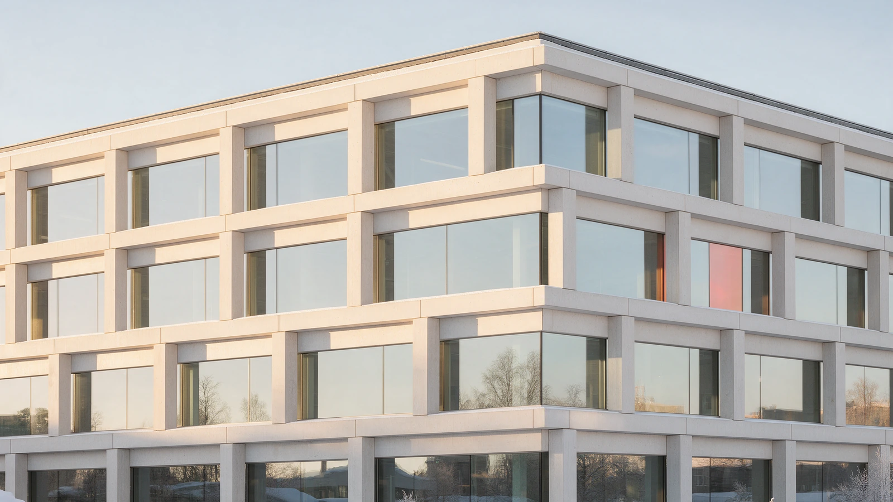

Варианты оформления списков
Служебная страница для выбора. Всё живое — кнопки и номера нажимаются, наведение работает. Выберите по одному варианту в каждом разделе, соберу на боевых страницах и снесу эту доску.
1 · Пагинация на Insights
Сейчас стоит П1. Остальные три — предложения: полоса-строка, номера-вкладки и крупные номера.
П1 · Кнопки с обводкой сейчас
Ровно то, что на странице. Надёжно и узнаваемо, но это просто три кнопки — ничего от языка макета в них нет.
П2 · Полоса листания во всю ширину
Ещё один ряд сетки, как кнопка «Show more» на кейсах: слева «предыдущие», справа «следующие», посередине счёт. Видно, сколько всего статей, и обе страницы читаются одним движением глаз. Elementor: Pagination = Previous/Next плюс текст счёта.
П3 · Номера-вкладки
Те же вкладки, что у рубрик на кейсах, только с номерами: ряд на тонкой линии, активная страница загорается акцентом. Страница получается собрана одним приёмом сверху донизу — рубрики вкладками, страницы вкладками.
П4 · Крупные номера, как в леджере
Номер набран как заголовок 44 px: неактивные приглушены до 40 %, текущий тёмный с акцентной чертой — ровно приём леджера продуктов с главной. Самый выразительный вариант; при десятке страниц ряд станет длинным.
2 · Чем статья отличается от кейса
Слева в каждой паре — карточка статьи, справа — плитка кейса. Ваша идея с полем 6 px — вариант В1.
В1 · Поле 6 px только у кейсов ваш вариант
У кейса логотип лежит на бежевой плашке, вокруг которой белое поле — плитка читается как «карточка клиента». У статьи кадр идёт до краёв: фотография заполняет плитку целиком. Разница считывается мгновенно, при этом обе живут в одной сетке.
Salesforce + WordPress integration
Crafting compelling websites that seamlessly merge your Salesforce CRM data with WordPress through the WordPress Connect tool opens the door to a world of possibilities.


HDFC Bank: India’s Largest Private Bank
Headquartered in Mumbai, HDFC Bank Limited stands as a prominent Indian banking and financial services institution.
Industry: Financial/Lending
В2 · Поле 6 px у обоих
Поле и у статьи, и у кейса: обе картинки становятся вставками внутри плитки, сетка выглядит легче и «дороже». Но тогда статьи и кейсы различаются только содержанием кадра — фото против логотипа.
Applying Design Thinking principles to the six stages of IT project methodology
To succeed in the dynamic IT environment, we at Red Orange Technologies adapt our project management methodologies to meet our clients’ evolving needs.


Star Autoco: Driving Excellence in Oslo
Star Autoco is a trusted destination for premium used cars in Oslo, where quality meets value.
Industry: Automobile
В3 · Кадр сверху у статьи
У статьи фотография идёт первой и ведёт карточку, текст под ней; у кейса сверху плашка с логотипом в поле 6 px. Два разных порядка чтения: статью открывает кадр, кейс — клиент. Минус: карточка блога перестаёт быть той же, что в секции Insights на главной.
Red Orange Technologies pushing automation with Salesforce, HubSpot and SAP
Customer Relationship Management (CRM) and Enterprise Resource Planning (ERP) systems are the two main solutions when it comes to automating core business processes.

FLAME University: Elevating Academic Excellence
FLAME University (Foundation for Liberal and Management Education), a private co-educational and fully residential university based in Pune, India.
Industry: Education
В4 · Статьи отдельными карточками
Кейсы остаются сплошной сеткой с общими линиями — «каталог работ», а статьи разъезжаются в отдельные карточки с зазором 24. Разница видна ещё до того, как прочитан хоть один заголовок. Минус: ломает единый ритм линий на сайте.
Elevate your business with Salesforce Sales Cloud
Looking to grow your business, find new customers, and close deals faster than ever before? Then look no further than Salesforce Sales Cloud.

Kepandi is a Norwegian webshop for fashion and accessories
Kepandi is a Norwegian webshop for fashion and accessories. The webshop was developed from scratch based on a visual platform.
Industry: Fashion and Accessories
3 · Обложки статей — три направления
Пробные кадры, по одному на направление. Выберете одно — сгенерирую по нему все двенадцать, с разными сюжетами под темы статей. Кадры со staging (Magarpatta City, портреты Pranshu и Amit) остаются настоящими: их не трогаем.